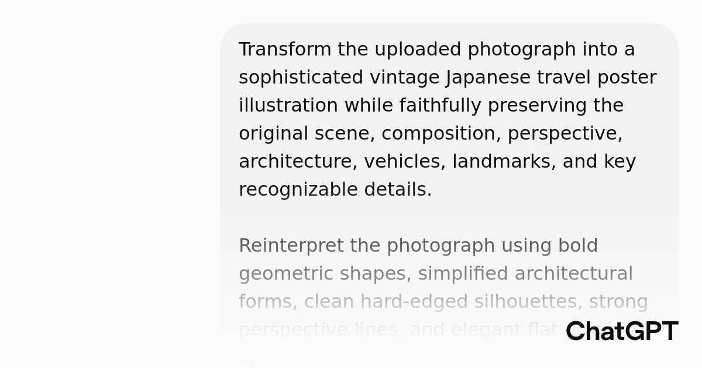

Threads｜照片轉復古海報 Prompt：把旅遊照片重構成 1960–70 年代日式觀光海報

一句話摘要
這個 Prompt 的關鍵不是「把照片套成復古濾鏡」，而是要求模型保留原始地點的辨識特徵，再用幾何形狀、平面色塊、強烈透視與網版印刷質感，把照片重新設計成一張可收藏的日式旅遊海報。
來源脈絡
本篇整理自 Threads 使用者 andrew_hsin／AI Threads 的分享。貼文指出 GPT 越來越能生成這類具有完整視覺風格的作品，並附上一個 ChatGPT 分享 Prompt。
ChatGPT 分享頁標題為〈照片轉復古海報 Prompt〉，公開內容是一份英文影像生成指令，涵蓋場景保留、視覺風格、色彩、印刷質感、文字配置、版面比例與負面限制。
Prompt 的核心結構
### 1. 先保留原始場景身份
Prompt 開頭要求忠實保留：
- 原始場景與構圖
- 視角與透視
- 建築、車輛與地標
- 具有辨識度的關鍵細節
這一步很重要，因為它把任務定義成「重構同一個地方」，而不是生成一張只保留大致氛圍的新圖。
### 2. 用設計語言重新繪製
它要求將照片轉換成：
- 大膽幾何形狀
- 簡化建築形式
- 乾淨、硬邊的剪影
- 強烈透視線
- 精緻的平面圖像設計
人物則簡化成優雅的極簡剪影，車輛、火車、街道、招牌與結構元素都轉化成清楚的圖形形體。
### 3. 鎖定日式中世紀觀光海報語彙
風格參考包括：
- 1960–70 年代日本平面設計
- 日本鐵路旅遊海報
- 復古新幹線廣告
- 經典網版印刷旅遊海報
這些參考不是要求複製某一張既有海報，而是提供時代、產業與視覺語彙，讓模型理解應該往哪一種設計系統靠近。
### 4. 限定復古色盤
主要色彩為：
- 深海軍藍
- 暖象牙色／舊紙米色
- 柔和金黃色
- 朱紅色點綴
同時明確排除漸層、鏡面光澤、霓虹色與現代數位插畫感，讓視覺更接近平面印刷品。
### 5. 加入印刷瑕疵
Prompt 要求加入細微的：
- 網版印刷質感
- 油墨覆蓋不均
- 紙張顆粒
- 復古印刷的不完美
這些細節能避免結果只是「數位圖片套棕色濾鏡」，而更像真正印刷出來的海報。
### 6. 預留文字區與版型
版面設定為約 3:4 的直式海報，底部保留充足文字空間，並插入可替換欄位：
```text
[LOCATION]
[SUBTITLE]
```
另外放入左下角 `2026` 與右下角 `No.01` 等編輯細節，增加收藏版海報的出版物感。
可直接套用的精簡版
```text
Transform the uploaded photograph into a sophisticated vintage Japanese travel poster illustration while faithfully preserving the original scene, composition, perspective, architecture, vehicles, landmarks, and key recognizable details.
Reconstruct the photograph as an intentional graphic illustration using bold geometric shapes, simplified architectural forms, clean hard-edged silhouettes, strong perspective lines, and elegant flat graphic design. Use a style inspired by mid-century Japanese railway tourism posters, 1960s–1970s graphic design, retro Shinkansen advertising, and classic screen-printed travel posters.
Preserve the identity of the original location rather than inventing a different scene. Use a restrained palette of deep navy blue, warm ivory paper, muted golden yellow, and vermilion red accents. Add subtle screen-print texture, fine paper grain, and gentle vintage print imperfections. Avoid gradients, glossy effects, neon colors, and modern digital illustration aesthetics.
Create a vertical poster in approximately a 3:4 ratio. Leave generous space near the bottom for typography. Add the destination title “[LOCATION]”, the subtitle “[SUBTITLE]”, “2026” on the left, and “No.01” on the right. Use bold geometric sans-serif typography with generous letter spacing.
Do not simply apply a poster filter. Reconstruct the photograph as a deliberate graphic illustration while maintaining the visual identity and perspective of the original scene.
```
使用方式
- 上傳一張具有清楚地標、建築或街道透視的照片。
- 將 `[LOCATION]` 替換為地點名稱，例如 `TAIPEI` 或 `KÖNIGSSEE`。
- 將 `[SUBTITLE]` 替換為簡短副標，例如 `CITY OF FORMOSA`。
- 先用原始 Prompt 生成，再只調整色彩、文字與構圖，不要一開始同時修改太多條件。
- 檢查地標、招牌、車牌、文字與人物是否被模型錯誤重畫。
- 若要公開使用，另行確認照片、字體、商標與地標圖像的授權問題。
為什麼值得收進 AI 學習雷達
這個案例值得保存的地方，不只是「復古海報」這個風格，而是它示範了高品質影像 Prompt 的組成方式：
- 先定義不可失真的內容。
- 再定義要採用的設計語彙。
- 接著鎖定色彩、材質與版型。
- 最後用明確的禁止事項排除常見錯誤方向。
換句話說，Prompt 同時處理了內容保真、風格轉換、設計系統、版面輸出與負面限制，比單純輸入「做成復古海報」更容易得到穩定結果。
判讀限制
這是社群分享的 ChatGPT Prompt 案例，不是 OpenAI 官方保證的固定模板。不同模型、圖片品質、文字生成能力與帳號功能可能造成結果差異。海報中的地名、年份、英文副標與細小文字仍建議後製校正，不應完全依賴模型一次生成。
原始連結
- Threads 分享：https://www.threads.com/share/_e0SMAPdD/
- Threads 原始貼文：https://www.threads.com/@andrew_hsin/post/Dc8fjiaD6Ax
- ChatGPT 分享 Prompt：https://chatgpt.com/s/p_6a9d569fe6b08191a21b15454ee52353